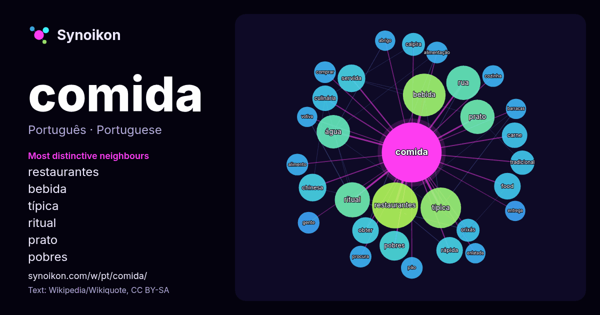

Português · palavra popular
comida
“food” · As palavras encontradas ao seu redor em 870 ocorrências da Wikipédia, Wikiquote.

Vizinhos mais característicos
- restaurantes 32×
- bebida 29×
- típica 26×
- ritual 21×
- prato 19×
- pobres 14×
- servida 13×
- food 13×
- chinesa 12×
- rua 12×
- rápida 11×
- culinária 11×
- carne 10×
- obter 10×
- caipira 9.9×
- orixás 9.7×
- água 8.8×
- cozinha 8.4×
- pão 8.4×
- comprar 8.2×
× = quantas vezes mais do que no texto geral da Wikipédia.
Vizinhos mais frequentes
- restaurantes 36
- bebida 31
- típica 28
- ritual 21
- prato 20
- rua 20
- água 19
- pobres 15
- chinesa 13
- servida 13
- casa 12
- food 12
- obter 12
- rápida 12
- carne 11
- culinária 11
- melhor 10
- popular 10
- tradicional 10
- caipira 9
Em contexto
- Nota: ""Comida"" redireciona para este artigo. Para a música dos Titãs, veja Comida (canção). Alimento (do latim alimentum) é toda substância utilizada Wikipedia snippets · Alimento
- Uma refeição aérea, comida aérea ou refeição a bordo é uma refeição servida aos passageiros a bordo de um avião comercial. Estas refeições são preparadas Wikipedia snippets · Comida de avião
- Antunes entoa: "A gente não quer só comida / A gente quer comida, diversão e arte / A gente não quer só comida / A gente quer saída para qualquer parte Wikipedia snippets · Comida (canção)
- criação da comida enlatada foi feita pelo francês Nicolas Appert em 1809 atendendo uma convocação do governo de seu país para levar comida em conservas Wikipedia snippets · Comida enlatada
- Um restaurante por quilo (também conhecido como comida por quilo, comida a quilo ou quilão) é um tipo de estabelecimento de alimentação em que o cliente Wikipedia snippets · Comida por quilo
- internacionais da história da alimentação. Por exemplo, analisaram o papel da comida como ferramenta colonial na África e na Ásia; a “McDonaldização”; as dimensões Wikipedia snippets · História da comida
- depois da Segunda Guerra Mundial, assim como a fraternização e o apoio de comida e fortes laços culturais designaram uma grande ligação entre os dois países Wikipedia snippets · Alemanha
- conhecidas por despachos. Em ambas as religiões, também há o conceito de comida ritual, pratos típicos feitos para agradar determinado orixá. No candomblé Wikipedia snippets · Oferendas nas religiões afro-brasileiras
Mais palavras
- arte
- ciência
- clima
- coração
- cão
- deus
- dinheiro
- família
- força
- gato
- história
- língua
- morte
- natureza
- ouro
- ponte
- saúde
- trabalho
- trem
- verdade
- vida
- água
Pré-calculado em 2026-10-09 com as configurações padrão (±5 palavras, corpus médio). O mapa interativo pode atualizá-lo com dados ao vivo.
Interface traduzida automaticamente; correções são bem-vindas.